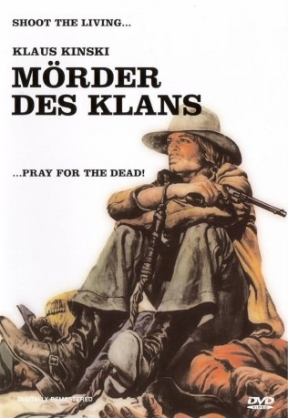

#4224 Der Mörder des Klans
Alternativ: Shoot the Living and Pray for the Dead (Englischer Titel)
 
 IMDB-Wertung: 6.2 / 10
IMDB-Wertung: 6.2 / 10  Metascore: 0
Metascore: 0 
Die Hogan-Bande trifft sich nach einem Raub auf einer Ranch. Daisy, Hogans Freundin, soll die Beute zum Versteck bringen. Ein ungebetener Gast erscheint, der ebenfalls einen Teil des Geldes in Anspruch nehmen will. Es folgt ein Kampf, bei dem kaum einer überlebt.
Jahr: 1971
Dauer: 94 Minuten
FSK: 12
Land: Italien Studio: Koch MediaTonspuren:
Untertitel:
Auflösung: 1080p (1920x824) Größe: 8140 MB
Genre: Western
Regisseur: Giuseppe Vari
Drehbuch: Kevin Murphy
Soundtrack:
Darsteller:
 Klaus Kinski als Dan Hogan
Klaus Kinski als Dan Hogan- Victoria Zinny als Edith
- Paolo Casella als John Webb
- Dino Strano als Reed
- Antonio La Raina als
- Dante Maggio als Jonathan
- Fortunato Arena als Coachman
- Anna Zinnemann als Daisy
- Adriana Giuffrè als Sandy
- Gianni Pulone als
- Aldo Barberito als Greene
- John Ely als Dick
- Patrizia Adiutori als Senta
- Mario Dardanelli als Mexican , uncredited
- Domenico Maggio als Cobra , uncredited
Datei: X:\HD-Western-1960-1979\Mörder des Klans, Der (1971, FSK12, 1920x824).mkv seit 26.08.2016
Festplatte: HD Eastern+Western
 Es gibt insgesamt 110 Filme in der Gruppe 'HD-Western-1960-1979'
Es gibt insgesamt 110 Filme in der Gruppe 'HD-Western-1960-1979'